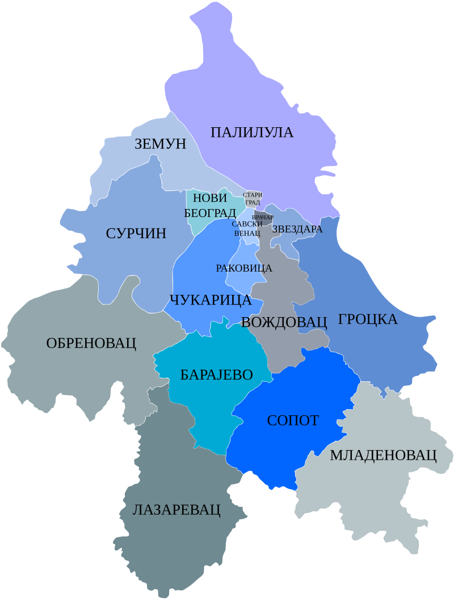

Dobro došli na Beogradsku Heraldiku!
Heraldika je drevna nauka o grbovima, simbolima i obeležjima koji predstavljaju porodice, gradove, države, pa čak i institucije. Koreni heraldike sežu u srednji vek, kada su grbovi bili važan način identifikacije, posebno u bitkama i turnirima, gde su vitezovi nosili grbove kao simbol časti, pripadnosti i snage. Svaki element grba nosi svoje značenje, od boja i simbola do specifičnih oblika, i zajedno pričaju jedinstvenu priču o onima koje predstavljaju.
Na stranici "Beogradska Heraldika" istražujemo simbole i grbove Beograda i njegovih opština, otkrivajući značenja i istorijske priče iza svake heraldike. Kroz bogatu prošlost i simbole, ovaj sajt vam donosi priliku da zavirite u nasleđe i kulturni identitet grada Beograda i njegovih gradskih i prigradskih opština.
Brzi linkovi
Gradske opštine
